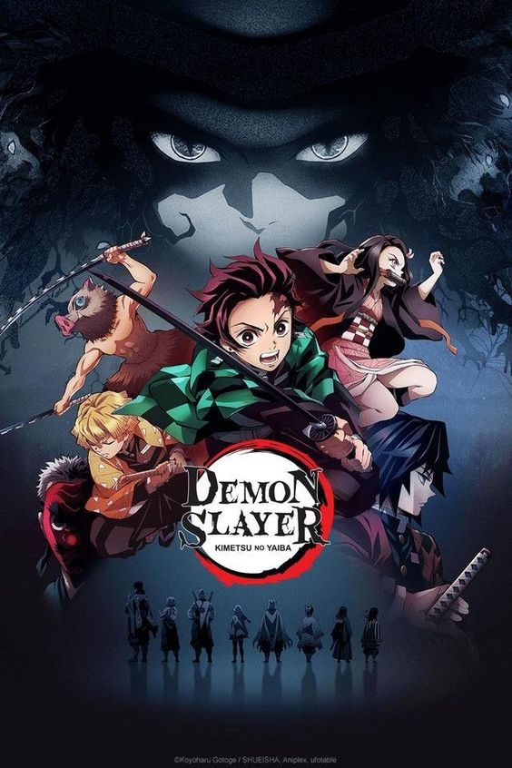

Imagen propiedad de wattpad. Tomada de Pinterest https://pin.it/NXfOI73
La serie trata de un joven llamado Tanjiro Kamado de unos 13 años de edad y con un olfato increible, que vivia con su familia en las montañas, un dia Tanjiro se va a trabajar al pueblo vendiendo carbon, pero cuando termina de trabajar es muy de noche y un señor le da posada en su casa y este le cuenta a Tanjiro sobre los demonios, cuando amanece Tanjiro se despide del señor y le agradce y coge su camino ya casi llegando a su casa siente un olor a sangre y va corriendo a ver que estaba sucediendo cuando llega se encuentra con una escena tragica donde su failia estaba muerta ecepto por su hermana asi que Tanjiro la sube a su espalda y se apura para llevarla al pueblo, en eso llega Tomioka un cazador de demonios que intenta matar a su hermana ya que ella se convirtio en uno, Tanjiro defiende a su hermana y lucha contra el cazador de demonios y este los ayuda diciendoles que vallan donde un señor que les podia ayudar, al llegar donde este señor, este comienza a entrnar a Tanjiro para que se vuelva mucho más fuerte lo cual lo lleva a una competencia y se convierte en cazador de demonios y comienza su viaje junto a su hermana. Cuando emprende su viaje se encuentra a otros cazadores de demonios (Zenitsu e Inosuke) y se hacen amigos tambien se da cuenta que cada vez se va a tener que enfrentar a una serie de demonios cada vez más fuertes y cada vez se va volviendo mucho más fuerte hasta poder dominar otras tecnicas, despues de convatir a tantos demonios el y sus amigos se toman un descanso para recuperarse y entrenar para poder seguir con su viaje. Esta vez tenian que derrotar a unos demonios mucho más fuertes que los que abian enfrentado anteriormente se trataba de la quinta luna inferior y su familia, estos derrotaron a la familia de la quinta luna y llegaron unos pilares (cazadores de demonios) y los ayudaron a matar a la quinta luna pero antes se pelearon entre si porque Tomioka estaba protejiendo a la hermana de Tanjiro de Shinobu otra pilar que la queria matar ya que ella era un demonio, y iba en contra de las reglas proteger a un demonio, cuando llegaron a donde el patrón abian mucho más pilares que entre ellos y el patrón decidieron dejar viva a Nesuko porque demostro que no seria capaz de lastimar a ningún humano y Shinobu los llevo a su casa para cuarale las heridas y entrenarlos mejor, depúes de un tiempo Tanjiro y sus amigos (Zenitsu e Inosuke) se vuelven mucho más fuertes casi tan fuertes como un pilar.
Imagen propiedad de Lucie Lasseube. Tomada de Pinterest https://pin.it/ToNrtAq
En la segunda temporada aparece un pilar llamado Uzui que quiere llevarse a Aoi para que lo ayudara en una misión pero Tanjiro, Zenitsu e Inosque se ofrecen a ir con el, llegan al distrito rojo y Uzui les dice lo que deben hacer y los prepara y los deja en casas diferentes donde también deben estar sus esposas a medida que van pasando los dias en aquellas casas los tres se dan cuenta que hay algo muy extraño, desaparcen muchachas y no dejan rastro y esto se debia a que abia un demonio entre todas ellas que se las comia y decia que se escapaban con el hombre que amaban para no levantar sospechas, y una de las esposa de Uzui desaparecio y una señora le reclamo al deminio que le dijera la verdad y esta le dijo la verdad y después la mato ya que tenia más edad de las que le gustaba comerse al demonio, entonces Inosuke llego hacia el cuarto en donde se ospedaba unas de las esposas de Uzui a investigar y escucho como algúna cosa se estaba deslizando por entre los techos las paredes y el piso y al intentar colpear a aquella cosa que estaba por ahi le pego a un señor, por otro lado Zenitsu que vivia en la casa donde estaba el demonio escucho como una niñas estaba llorando a lo lejos (ya que el tiene un oido super desarrollado que puede escuchar mucho mejor a larga distancia) entones el se dirige hacia donde estaba la niña llorando y entra en la habitación y le pregunta que porque esta llorando en ese momento llega el demonio y le pregunta a Zenitsu que porque estaba ahi y agarra a la niña por una oraja y la hace sangrar asi que Zenitsu se pone bravo y le dice que la suelte agarrandole la muñeca lo cúal al demonio no le gusta mucho y la termina pegando y no noquea del golpe que le dio. El demonio se lleva a Zenitsu para su guarida que esta debajo de la tierra, Inosuque se da cuenta que hay algo debajo de la tierra y rompe el piso de la casa para entrar y se da cuenta que hay mujeres dentro de una tela y empieza a cortar la tela, entonces Tanjiro se enfrenta a aquel demonio y este lo deja muy mal herido lo cual Nesuko se pone muy brava y va a defenderlo y termina perdiendo el control de si misma y Tanjiro tiene que calmarla mientras Uzui le corta la cabeza y este demonio empieza a llorar y a llamar a su hermano y este sale del cuerpo de ella y la comienza a consolar, empieza una pelea contra estos dos demonios, hasta que le cortan la cabeza a los dos y estos mientras se van desapareciendo comienzan a culparse mutuamente y termina en que todos pudieron sobrevivir al inesperado ataque final de veneno de Gyutaro gracias a que Nesuko que con su poder de sangre pudo detener el veneno para que no fuera más tragico.
Imagen propiedad de Zciaaa. Tomada de Pinterest https://pin.it/7kG6se0
La pelicula empieza cuando Tanjiro, Zentsu e Inosuke entran a tren donde se encuentran al pilar Rengoku fascinado por la comida, lo cual Zenitsu pregunta que si el es pilar de la flama, Rengoku los reconoce y les da la bienvenida y les pregunta "que estan haciendo aqui" lo culal Tanjiro le responde que los mandaron ya que las personas estaban desapareciendo entonces los mandaron a apoyarlo, depuès Rengoku les dce que tengancuidado con los demonios lo cual Zenitsu entra en panico ya que les tiene miedo, Rengoku les propone a Tanjiro, Zenitsu e Inosuke que los volveria sus dicipulos prometio que los iba a entranar para que se volvieran mas fuertes y ellos aceptaron y despues de que el guardia del tren marcara sus boletos`aparecen dos demonios pero Rengoku los mata, tras matarlos y asegurarse de que todos los pasajeros estuviersan bien caen en un sueño profundo, soñando con las cosas que los aria mas felices, Rengoku sueña donde entrena a su hermano menor, Zenitsu sueña tenendo una cita con Nesuko, Inosuke soñaba que estaba con Tanjiro, Zenitsu y Nesuko, y Tanjiro soñaba con su familia viva, y todo esto gracias a un demono llamado Enmu que fue enviado a matar a Rengoku, el demonio estaba controlando humanos con la excusa de que si hacian lo que el queria los aria soñar con lo que los hace mas felices, mezclo su sangre con la tinta de los boletos y cuando el guardia los marco activo el echizo y puso a dormir a Rengoku, Tanjiro, Zenitsu e Inosuke y les pidio a los humanos que mientras ellos dormian se metieran en sus sueños con unas cuerdas con un echizo para eso mismo, que encontratar un espacio fuera del sueño el nucleo espiritual y que lo destruyeran para dejar a los afectados sin alma y asi poder comercelos sin la necesidad de pelear pero ninguno lo consigue y se terminan despertando, todos menos Zenitsu que no necesita estar despierto para pelear, Taniro despues de suicidarse en su sueño le pide a Nesuko que cuide a los civiles y se fue a pelear contra el demonio, lo cual Enmu lo intentaba dormir pero Tanjiro se suicidaba en los sueños para despertar asi consiguio avanzar hasta el demonio y cuando le iba a contar la cabeza, resulta que el demonio ya se abia fucinado con el tren, depues Rengoku le dice a Inosuke y a Tanjiro que busquen el cuello dl demonio mientras el, Zenitsu y Nesuko cuidaban a todos los civiles para que el demonio no se los comiera, ellos buscaron y buscaron hasta que finalmente lo encontraron gracias al agudo olfato de Tanjiro, el demonio intento dormirlos pero a Inosuke no le afectaba gracias a su mascara, depues de intentarlo muchas veces porfin lograron matar al demonio, pero como el demonio estaba unido con el tren, este colapsa, Tanjiro al estar cansado no puede defenderse y el seguidor del tren lo apuñala y Rengoku le enseña como detener el sangrado con la habilidad de respiraciòn de la nada aparce un demonio de alto rango llamado Akasa ofreciendole a Rengoku ser un deminio ya que era muy fuerte, pero el pilar le dijo que no y empezo una pelea entre un pilar y una luna demoniaca, Tanjiro e Inosuke se dan cuenta la diferencia de poder y saben que no peden meterse poque serian un estorbo y podrian morir, depues de estar tanto tiempo de estar peleando Rengoku se ve cansado pero consentra toda su energia para matar a Akasa y se ve como si fuera a partirlo en dos pero el demonio le atravieza el estomago al pilar, entonces el pilar quiere detener a Akasa hasta que salga el sol y asi poder matarlo, pero rompe sus extremidades y escapa luego se ve como el pilar va muriendo lentamente y le deja un mensaje "No importa lo debil o indigno que te sientas, maten tu corazon ardiendo, aprieta los dientes y sigue adelante, si te reduces en una bola y te escondes el tiepo se te pasara, no se te detendra por ti mientras te revuelcas en el dolor" Rengoku ve el espiritu de su mamà y le pregunta que si hozo las cosas bien y ella le dice que si, y el pilar fallece con una sonrisa, tras su muerte la pelicula termina con todos lloraron.
Producto desarrollado para fines educativos en el Servicio Nacional de Aprendizaje SENA - Centro de Gestión de Mercados, Logística y Tecnologías de la Información - Tecnología en Producción de Multimedia - 2023